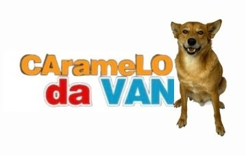
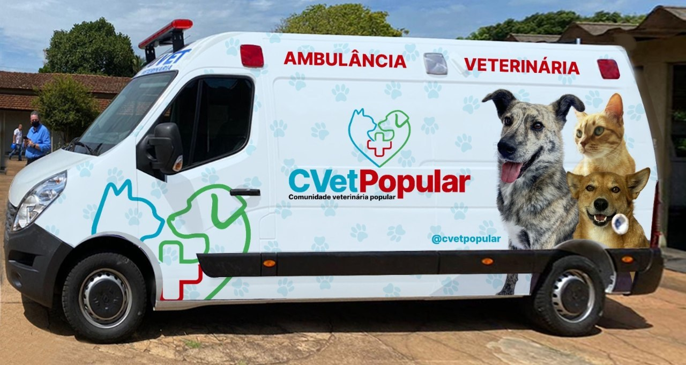
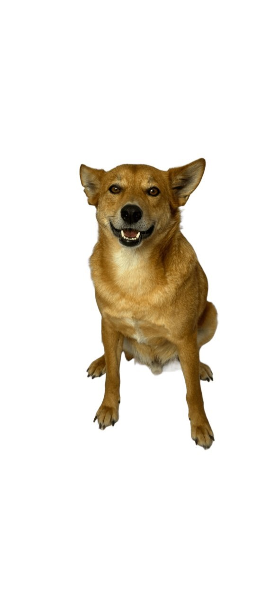
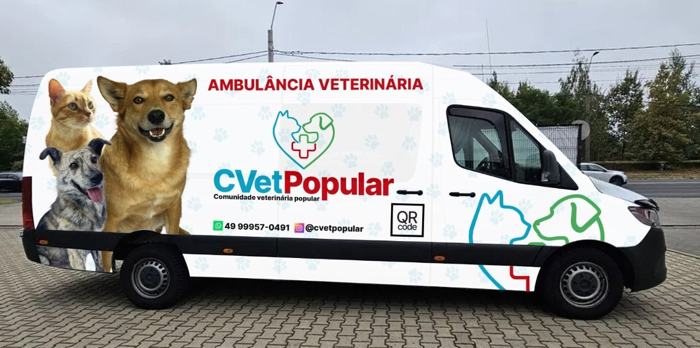
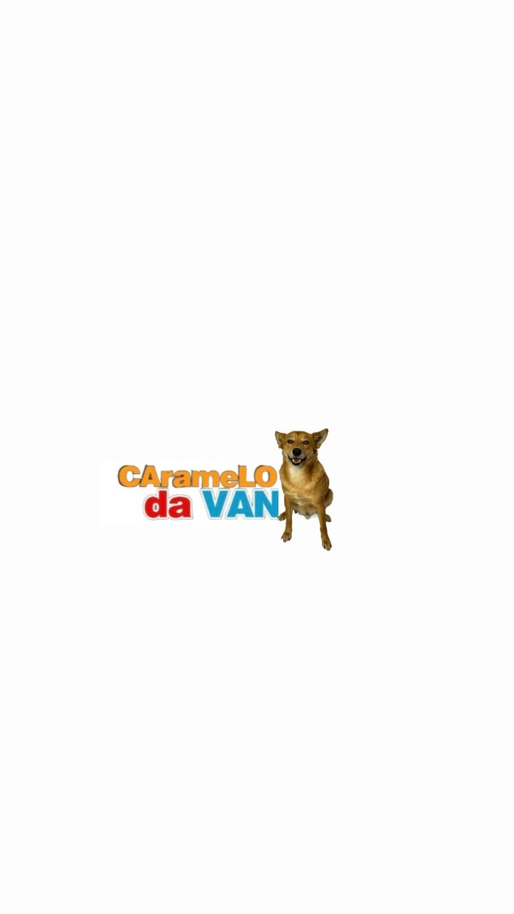

Conforto na porta de casa
Ideal para gatos, pets idosos, animais obesos e tutores que buscam praticidade.

Caramelo da VãClínica veterinária móvel, com agendamento
A Caramelo da Vã leva consulta, exames, vacinas e planos de prevenção até tutores de Lages e da região da AMURES, com conforto, tecnologia e cuidado acessível.

Prevenção
Os planos foram criados para acompanhar a saúde de cães e gatos com rotina, exames e orientação veterinária. Em vez de esperar a doença avançar, o tutor agenda um cuidado preventivo e recebe a equipe com mais tranquilidade.
Comparar planos
Quem somos
A Caramelo da Vã nasceu da ideia de que saúde animal não pode ser privilégio. Nossa missão é levar cuidado veterinário com tecnologia para mais famílias. Nossa visão é ser referência em veterinária móvel acessível e moderna.

Diferenciais
Ideal para gatos, pets idosos, animais obesos e tutores que buscam praticidade.

Planos com possibilidade de parcelamento de 10 a 24 vezes, no cartão ou boleto.
Exames de imagem, exames de sangue, ultrassom, eletrocardiograma e mensuração de pressão.
Casos de internação, cirurgias e maior complexidade são encaminhados para clínica parceira.
Serviços
Clínica médica, consultas, emergência veterinária com agendamento, exames de imagem, exames de sangue, vacinas e planos de imunização para cães e gatos.
Falar com a equipePlanos preventivos
Os valores são consultados pelo WhatsApp. Os planos mais escolhidos estão destacados.
Consulta e combo básico.
Consultar valorConsulta, combo básico, radiografia de tórax, ultrassom abdominal e pressão.
Consultar valorConsulta, combo avançado, radiografia de tórax, ultrassom abdominal, pressão e eletrocardiograma.
Consultar valorTudo do Ouro, mais perfil de eletrólitos e ecocardiograma.
Consultar valorConsulta e combo básico.
Consultar valorConsulta, combo básico, teste FIV/FeLV, radiografia de tórax, ultrassom abdominal e pressão.
Consultar valorConsulta, combo avançado, FIV/FeLV, radiografia, ultrassom, pressão, eletrólitos, ECG e ecocardiograma.
Consultar valorAvaliação pediátrica, vacina óctupla em 3 doses, raiva, vermífugo em 3 doses, banho e antipulgas.
Consultar valorTudo do Bronze, mais vacina da gripe nasal.
Consultar valorTudo do Prata, mais vacina da giárdia em 2 doses. Mais popular.
Consultar valorAvaliação pediátrica, vacina quádrupla em 2 doses, raiva, vermífugo em 2 doses e antipulgas.
Consultar valorTroca a quádrupla pela quíntupla em 2 doses e inclui teste FIV/FeLV. Mais popular.
Consultar valorConsulta, vacina óctupla, raiva, vermífugo e antipulgas.
Consultar valorTudo do Bronze, mais gripe nasal.
Consultar valorTudo do Prata, mais vacina da giárdia e avaliação completa. Mais popular.
Consultar valorConsulta, vacina quádrupla, raiva, vermífugo e antipulgas.
Consultar valorTroca a quádrupla pela quíntupla. Mais popular.
Consultar valorOnde atendemos
Atendimento móvel com agendamento em Lages, Correia Pinto, São Joaquim, Painel, Urubici, Rio Rufino, Otacílio Costa, Capão Alto, Bocaina do Sul, Bom Retiro, Urupema e região.
Confirmar minha cidadeParceiros
Tutores que chegam pelo site podem receber condições e benefícios em serviços parceiros, como hospedagem e creche pet. A equipe confirma as opções disponíveis no contato.
Quero receber benefíciosAgende uma ligação
Depois de enviar, você escolhe um horário sugerido para uma ligação. Os dados são organizados para o WhatsApp da equipe.